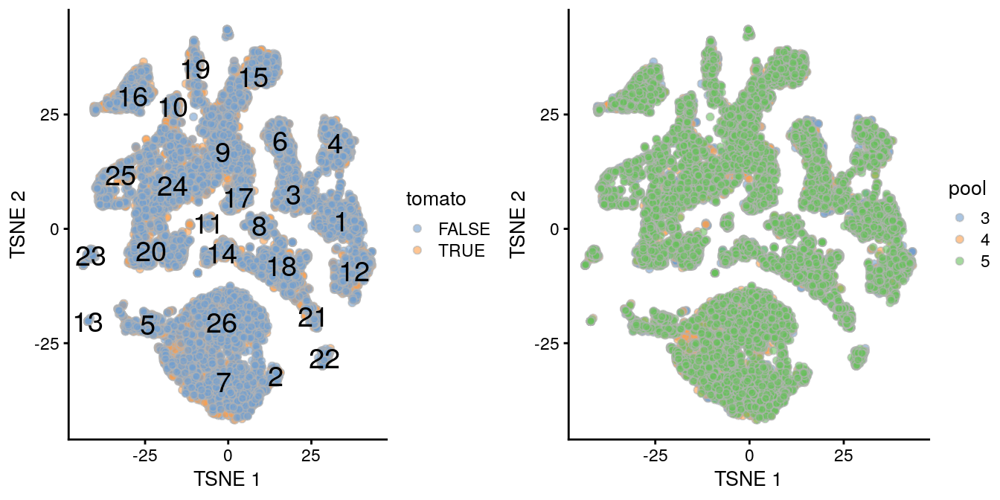

Chapter 14 Multi-sample comparisons
14.1 Motivation
A powerful use of scRNA-seq technology lies in the design of replicated multi-condition experiments to detect changes in composition or expression between conditions. For example, a researcher could use this strategy to detect changes in cell type abundance after drug treatment (Richard et al. 2018) or genetic modifications (Scialdone et al. 2016). This provides more biological insight than conventional scRNA-seq experiments involving only one biological condition, especially if we can relate population changes to specific experimental perturbations.
Differential analyses of multi-condition scRNA-seq experiments can be broadly split into two categories - differential expression (DE) and differential abundance (DA) analyses. The former tests for changes in expression between conditions for cells of the same type that are present in both conditions, while the latter tests for changes in the composition of cell types (or states, etc.) between conditions. In this chapter, we will demonstrate both analyses using data from a study of the early mouse embryo (Pijuan-Sala et al. 2019).
14.2 Setting up the data
Our demonstration scRNA-seq dataset was generated from chimeric mouse embryos at the E8.5 developmental stage. Each chimeric embryo was generated by injecting td-Tomato-positive embryonic stem cells (ESCs) into a wild-type (WT) blastocyst. Unlike in previous experiments (Scialdone et al. 2016), there is no genetic difference between the injected and background cells other than the expression of td-Tomato in the former. Instead, the aim of this “wild-type chimera” study is to determine whether the injection procedure itself introduces differences in lineage commitment compared to the background cells.
The experiment used a paired design with three replicate batches of two samples each. Specifically, each batch contains one sample consisting of td-Tomato positive cells and another consisting of negative cells, obtained by fluorescence-activated cell sorting from a single pool of dissociated cells from 6-7 chimeric embryos. For each sample, scRNA-seq data was generated using the 10X Genomics protocol (Zheng et al. 2017) to obtain 2000-7000 cells.
### loading ###
library(MouseGastrulationData)
sce.chimera <- WTChimeraData(samples=5:10)
sce.chimera
### feature-annotation ###
library(scater)
rownames(sce.chimera) <- uniquifyFeatureNames(
rowData(sce.chimera)$ENSEMBL, rowData(sce.chimera)$SYMBOL)
### quality-control ###
drop <- sce.chimera$celltype.mapped %in% c("stripped", "Doublet")
sce.chimera <- sce.chimera[,!drop]
### normalization ###
sce.chimera <- logNormCounts(sce.chimera)
### variance-modelling ###
library(scran)
dec.chimera <- modelGeneVar(sce.chimera, block=sce.chimera$sample)
chosen.hvgs <- dec.chimera$bio > 0
### merging ###
library(batchelor)
merged <- correctExperiments(sce.chimera,
batch=sce.chimera$sample,
subset.row=chosen.hvgs,
PARAM=FastMnnParam(
merge.order=list(
list(
list(1, 3), # WT (3 replicates)
5
),
list(
list(2, 4), # td-Tomato (3 replicates)
6
)
)
)
)
### clustering ###
g <- buildSNNGraph(merged, use.dimred="corrected")
clusters <- igraph::cluster_louvain(g)
merged$cluster <- factor(clusters$membership)
### dimensionality-reduction ###
merged <- runTSNE(merged, dimred="corrected", external_neighbors=TRUE)
merged <- runUMAP(merged, dimred="corrected", external_neighbors=TRUE)## class: SingleCellExperiment
## dim: 14699 19426
## metadata(1): merge.info
## assays(3): reconstructed counts logcounts
## rownames(14699): Xkr4 Rp1 ... Vmn2r122 CAAA01147332.1
## rowData names(1): rotation
## colnames(19426): cell_9769 cell_9770 ... cell_30701 cell_30702
## colData names(12): batch cell ... doub.density cluster
## reducedDimNames(3): corrected TSNE UMAP
## spikeNames(0):
## altExpNames(0):The differential analyses are predicated on many of the pre-processing steps covered in previous chapters. For brevity, we will not explicitly repeat them here, only noting that we have already merged cells from all samples into the same coordinate system (Chapter 18.2.6) and clustered the merged dataset to obtain a common partitioning across all samples (Chapter 10). A brief inspection of the results indicates that clusters contain similar contributions from all batches with only modest differences associated with td-Tomato expression (Figure ??).
##
## FALSE TRUE
## 1 548 402
## 2 326 268
## 3 61 52
## 4 466 396
## 5 471 212
## 6 258 249
## 7 1236 958
## 8 203 221
## 9 630 631
## 10 71 180
## 11 47 57
## 12 417 310
## 13 414 628
## 14 58 0
## 15 209 214
## 16 363 509
## 17 234 198
## 18 657 607
## 19 151 303
## 20 579 443
## 21 137 74
## 22 82 78
## 23 155 1
## 24 762 878
## 25 363 498
## 26 1433 728##
## 3 4 5
## 1 224 174 552
## 2 98 218 278
## 3 26 30 57
## 4 226 170 466
## 5 78 163 442
## 6 187 116 204
## 7 294 903 997
## 8 69 134 221
## 9 229 424 608
## 10 114 54 83
## 11 16 31 57
## 12 179 169 379
## 13 114 288 640
## 14 2 51 5
## 15 77 97 249
## 16 183 242 447
## 17 157 81 194
## 18 123 308 833
## 19 106 118 230
## 20 236 238 548
## 21 3 10 198
## 22 27 29 104
## 23 6 84 66
## 24 217 455 968
## 25 132 172 557
## 26 201 885 1075gridExtra::grid.arrange(
plotTSNE(merged, colour_by="tomato", text_by="cluster"),
plotTSNE(merged, colour_by=data.frame(pool=factor(merged$pool))),
ncol=2
)
Ordinarily, we would be obliged to perform marker detection to assign biological meaning to these clusters. For simplicity, we will skip this step by directly using the cell type labels provided by Pijuan-Sala et al. (2019). These were obtained by mapping the cells in this dataset to a larger, pre-annotated “atlas” of mouse early embryonic development. While broadly consistent, many of our clusters map to multiple labels (Figure @ref(fig:heat-cluster-label}), which reflects the difficulties in unambiguously resolving cell types undergoing differentiation.
by.label <- table(merged$cluster, merged$celltype.mapped)
pheatmap::pheatmap(log2(by.label+1), cluster_cols=FALSE, cluster_rows=FALSE,
color=viridis::viridis(101))Figure 14.1: Heatmap showing the abundance of cells with each combination of cluster (row) and cell type label (column). The color scale represents the log2-count for each combination.
14.3 Differential expression between conditions
14.3.1 Creating pseudo-bulk samples
The most obvious differential analysis is to look for changes in expression between conditions. We perform the DE analysis separately for each label to identify cell type-specific transcriptional effects of injection. The actual DE testing is performed on “pseudo-bulk” expression profiles (Tung et al. 2017), generated by summing counts together for all cells with the same combination of label and sample. This leverages the resolution offered by single-cell technologies to define the labels, and combines it with the statistical rigor of existing methods for DE analyses involving a small number of samples.
# Using 'label' and 'sample' as our two factors; each column of the output
# corresponds to one unique combination of these two factors.
summed <- aggregateAcrossCells(merged,
id=DataFrame(
label=merged$celltype.mapped,
sample=merged$sample)
)
summed## class: SingleCellExperiment
## dim: 14699 186
## metadata(1): merge.info
## assays(1): counts
## rownames(14699): Xkr4 Rp1 ... Vmn2r122 CAAA01147332.1
## rowData names(1): rotation
## colnames: NULL
## colData names(14): batch cell ... label sample
## reducedDimNames(3): corrected TSNE UMAP
## spikeNames(0):
## altExpNames(0):At this point, it is worth reflecting on the motivations behind the use of pseudo-bulking:
- Larger counts are more amenable to downstream analysis with standard methods for bulk RNA-seq analysis. Normalization is more straightforward and certain approximations are more accurate for large counts.
- Collapsing cells into samples reflects the fact that our biological replication occurs at the sample level (A. T. L. Lun and Marioni 2017). Each sample is represented no more than once for each condition, avoiding problems from unmodelled correlations between samples. Supplying the per-cell counts directly would indicate that each cell is a biological replicate, which is not true from an experimental perspective.
- Variance between cells within each sample is masked, provided it does not affect variance across (replicate) samples. This avoids penalizing DEGs that are not uniformly up- or down-regulated for all cells in all samples of one condition. Masking is generally desirable as DEGs (unlike marker genes) do not need to have low within-sample variance to be interesting, e.g., if the treatment effect is consistent across populations but heterogeneous on a per-cell basis.
14.3.2 Performing the DE analysis
14.3.2.1 Introduction
The DE analysis will be performed using quasi-likelihood (QL) methods from the edgeR package (Robinson, McCarthy, and Smyth 2010; Chen, Lun, and Smyth 2016). This uses a negative binomial generalized linear model (NB GLM) to handle overdispersed count data in experiments with limited replication. In our case, we have biological variation with three paired replicates per condition, so edgeR (or its contemporaries) is a natural choice for the analysis.
We do not use all labels for GLM fitting as the strong DE between labels makes it difficult to compute a sensible average abundance to model the mean-dispersion trend. Moreover, label-specific batch effects would not be easily handled with a single additive term in the design matrix for the batch. Instead, we arbitrarily pick one of the labels to use for this demonstration.
label <- "Mesenchyme"
current <- summed[,label==summed$celltype.mapped]
# Creating up a DGEList object for use in edgeR:
library(edgeR)
y <- DGEList(counts(current), samples=colData(current))
y## An object of class "DGEList"
## $counts
## Sample1 Sample2 Sample3 Sample4 Sample5 Sample6
## Xkr4 2 0 0 0 3 0
## Rp1 0 0 1 0 0 0
## Sox17 7 0 3 0 14 9
## Mrpl15 1420 271 1009 379 1578 749
## Rgs20 3 0 1 1 0 0
## 14694 more rows ...
##
## $samples
## group lib.size norm.factors batch cell barcode
## Sample1 1 4607053 1 5 cell_9769 AAACCTGAGACTGTAA
## Sample2 1 1064970 1 6 cell_12212 AAGGCAGAGATGCGAC
## Sample3 1 2494010 1 7 cell_13244 AAAGATGGTCATACTG
## Sample4 1 1028668 1 8 cell_16261 AAAGTAGAGCGATCCC
## Sample5 1 4290221 1 9 cell_19345 AAACGGGTCGTCTGAA
## Sample6 1 1950840 1 10 cell_23936 AAAGTAGTCTTGCCGT
## sample stage tomato pool stage.mapped celltype.mapped closest.cell
## Sample1 5 E8.5 TRUE 3 E8.25 Mesenchyme cell_24159
## Sample2 6 E8.5 FALSE 3 E8.25 Mesenchyme cell_66561
## Sample3 7 E8.5 TRUE 4 E8.25 Mesenchyme cell_137494
## Sample4 8 E8.5 FALSE 4 E8.5 Mesenchyme cell_132462
## Sample5 9 E8.5 TRUE 5 E7.25 Mesenchyme cell_17255
## Sample6 10 E8.5 FALSE 5 E8.5 Mesenchyme cell_41003
## doub.density cluster label sample.1
## Sample1 0.029850 19 Mesenchyme 5
## Sample2 0.001651 10 Mesenchyme 6
## Sample3 0.079208 24 Mesenchyme 7
## Sample4 0.014702 25 Mesenchyme 8
## Sample5 0.111286 9 Mesenchyme 9
## Sample6 0.000000 19 Mesenchyme 1014.3.2.2 Pre-processing
A typical step in bulk RNA-seq data analyses is to remove samples with very low library sizes corresponding to failed library preparation or sequencing. In our situation, this is equivalent to removing label-sample combinations that have very few or lowly-sequenced cells. The corresponding summed count vectors are likely to be highly variable and thus reduce power for DE detection. The exact definition of “very low” will vary, but in this case, we define it to be log-library sizes that are more than 3 median absolute deviations from the median.
discarded <- isOutlier(y$samples$lib.size, log=TRUE, type="lower", nmads=3)
y <- y[,!discarded]
summary(discarded)## Mode FALSE
## logical 6Another typical step in bulk RNA-seq analyses is to remove genes that are lowly expressed. This reduces computational work, improves the accuracy of mean-variance trend modelling and decreases the severity of the multiple testing correction. Genes are discarded if they are not expressed above a log-CPM threshold in a minimum number of samples (determined from the size of the smallest treatment group in the experimental design).
## Mode FALSE TRUE
## logical 9011 5688Finally, we correct for composition biases by computing normalization factors with the trimmed mean of M-values method (Robinson and Oshlack 2010). We do not need the bespoke single-cell methods described in Chapter 7, as the counts for our pseudo-bulk samples are large enough to apply bulk normalization methods. (Readers should be aware that edgeR normalization factors are closely related but not the same as the size factors described elsewhere in this book.)
## group lib.size norm.factors batch cell barcode
## Sample1 1 4607053 1.0683 5 cell_9769 AAACCTGAGACTGTAA
## Sample2 1 1064970 1.0487 6 cell_12212 AAGGCAGAGATGCGAC
## Sample3 1 2494010 0.9582 7 cell_13244 AAAGATGGTCATACTG
## Sample4 1 1028668 0.9774 8 cell_16261 AAAGTAGAGCGATCCC
## Sample5 1 4290221 0.9707 9 cell_19345 AAACGGGTCGTCTGAA
## Sample6 1 1950840 0.9817 10 cell_23936 AAAGTAGTCTTGCCGT
## sample stage tomato pool stage.mapped celltype.mapped closest.cell
## Sample1 5 E8.5 TRUE 3 E8.25 Mesenchyme cell_24159
## Sample2 6 E8.5 FALSE 3 E8.25 Mesenchyme cell_66561
## Sample3 7 E8.5 TRUE 4 E8.25 Mesenchyme cell_137494
## Sample4 8 E8.5 FALSE 4 E8.5 Mesenchyme cell_132462
## Sample5 9 E8.5 TRUE 5 E7.25 Mesenchyme cell_17255
## Sample6 10 E8.5 FALSE 5 E8.5 Mesenchyme cell_41003
## doub.density cluster label sample.1
## Sample1 0.029850 19 Mesenchyme 5
## Sample2 0.001651 10 Mesenchyme 6
## Sample3 0.079208 24 Mesenchyme 7
## Sample4 0.014702 25 Mesenchyme 8
## Sample5 0.111286 9 Mesenchyme 9
## Sample6 0.000000 19 Mesenchyme 1014.3.2.3 Statistical modelling
We set up the design matrix to block on the batch-to-batch differences across different embryo pools, while retaining an additive term that represents the effect of injection. The latter is represented in our model as the log-fold change in gene expression in td-Tomato-positive cells over their negative counterparts within the same label. Our aim is to test whether this log-fold change is significantly different from zero.
## (Intercept) factor(pool)4 factor(pool)5 factor(tomato)TRUE
## Sample1 1 0 0 1
## Sample2 1 0 0 0
## Sample3 1 1 0 1
## Sample4 1 1 0 0
## Sample5 1 0 1 1
## Sample6 1 0 1 0
## attr(,"assign")
## [1] 0 1 1 2
## attr(,"contrasts")
## attr(,"contrasts")$`factor(pool)`
## [1] "contr.treatment"
##
## attr(,"contrasts")$`factor(tomato)`
## [1] "contr.treatment"We estimate the negative binomial (NB) dispersions with estimateDisp().
The role of the NB dispersion is to model the mean-variance trend (Figure 14.2),
which is not easily accommodated by QL dispersions alone due to the quadratic nature of the NB mean-variance trend.
## Min. 1st Qu. Median Mean 3rd Qu. Max.
## 0.0103 0.0167 0.0213 0.0202 0.0235 0.0266
Figure 14.2: Biological coefficient of variation (BCV) for each gene as a function of the average abundance. The BCV is computed as the square root of the NB dispersion after empirical Bayes shrinkage towards the trend. Trended and common BCV estimates are shown in blue and red, respectively.
We also estimate the quasi-likelihood dispersions with glmQLFit() (Chen, Lun, and Smyth 2016).
This fits a GLM to the counts for each gene and estimates the QL dispersion from the GLM deviance.
We set robust=TRUE to avoid distortions from highly variable clusters (Phipson et al. 2016).
The QL dispersion models the uncertainty and variability of the per-gene variance (Figure 14.3) - which is not well handled by the NB dispersions, so the two dispersion types complement each other in the final analysis.
## Min. 1st Qu. Median Mean 3rd Qu. Max.
## 0.318 0.714 0.854 0.804 0.913 1.067## Min. 1st Qu. Median Mean 3rd Qu. Max.
## 0.227 12.675 12.675 12.339 12.675 12.675
Figure 14.3: QL dispersion estimates for each gene as a function of abundance. Raw estimates (black) are shrunk towards the trend (blue) to yield squeezed estimates (red).
We test for differences in expression due to injection using glmQLFTest().
DEGs are defined as those with non-zero log-fold changes at a false discovery rate of 5%.
Very few genes are significantly DE, indicating that injection has little effect on the transcriptome of mesenchyme cells.
(Note that this logic is somewhat circular,
as a large transcriptional effect may have caused cells of this type to be re-assigned to a different label.
We discuss this in more detail in Section 14.5 below.)
## factor(tomato)TRUE
## Down 8
## NotSig 5672
## Up 8## Coefficient: factor(tomato)TRUE
## logFC logCPM F PValue FDR
## Phlda2 -4.3874 9.934 1638.59 1.812e-16 1.031e-12
## Erdr1 2.0691 8.833 356.37 1.061e-11 3.017e-08
## Mid1 1.5191 6.931 120.15 1.844e-08 3.497e-05
## H13 -1.0596 7.540 80.80 2.373e-07 2.527e-04
## Kcnq1ot1 1.3763 7.242 83.31 2.392e-07 2.527e-04
## Akr1e1 -1.7206 5.128 79.31 2.665e-07 2.527e-04
## Zdbf2 1.8008 6.797 83.66 6.809e-07 5.533e-04
## Asb4 -0.9235 7.341 53.45 2.918e-06 2.075e-03
## Impact 0.8516 7.353 50.31 4.145e-06 2.620e-03
## Lum -0.6031 9.275 41.67 1.205e-05 6.851e-0314.3.3 Putting it all together
We repeat this process for each of the labels to identify injection-induced DE in each cell type.
This is mostly straightforward as we can write a loop that simply performs the DE analysis for each subset of columns in summed.
However, some additional care is required to automatically deal with labels that are not represented in both injected and background cells, for which a DE analysis between conditions is meaningless;
or are not represented in a sufficient number of replicate samples to enable modelling of biological variability.
This is represented by the extra checks related to design in the code chunk below.
de.results <- list()
for (i in unique(summed$celltype.mapped)) {
current <- summed[,i==summed$celltype.mapped]
y <- DGEList(counts(current), samples=colData(current))
discarded <- isOutlier(colSums(counts(current)),
log=TRUE, type="lower", nmads=3)
y <- y[,!discarded]
y <- y[filterByExpr(y, group=current$tomato),]
y <- calcNormFactors(y)
design <- try(
model.matrix(~factor(pool) + factor(tomato), y$samples),
silent=TRUE
)
if (is(design, "try-error") ||
qr(design)$rank==nrow(design) ||
qr(design)$rank < ncol(design))
{
# Skipping labels without contrasts or without
# enough residual d.f. to estimate the dispersion.
next
}
y <- estimateDisp(y, design)
fit <- glmQLFit(y, design)
res <- glmQLFTest(fit, coef=ncol(design))
de.results[[i]] <- res
}We examine the numbers of DEGs at a FDR of 5% for each label. In general, there seems to be very little differential expression that is introduced by injection.
summaries <- lapply(de.results, FUN=function(x) summary(decideTests(x))[,1])
sum.tab <- do.call(rbind, summaries)
sum.tab## Down NotSig Up
## Mesenchyme 8 5672 8
## Endothelium 3 3224 4
## Allantois 64 4779 65
## Erythroid3 10 5056 11
## Erythroid1 8 2784 12
## Pharyngeal mesoderm 5 5080 8
## Forebrain/Midbrain/Hindbrain 8 6225 12
## Spinal cord 14 4552 36
## Cardiomyocytes 6 4361 5
## Somitic mesoderm 10 2940 18
## NMP 6 4105 12
## Paraxial mesoderm 4 4756 5
## Erythroid2 4 3389 9
## Haematoendothelial progenitors 4 4106 7
## Neural crest 6 3314 5
## Rostral neurectoderm 3 2691 3
## Intermediate mesoderm 5 3070 5
## ExE mesoderm 5 5045 11
## Surface ectoderm 7 5557 9
## Gut 7 4479 7
## Caudal Mesoderm 3 1417 4
## Blood progenitors 2 1 2124 3
## Stripped 7 393 0
## Def. endoderm 3 1280 1
## Blood progenitors 1 1 1248 2
## PGC 1 527 0
## Caudal epiblast 0 1405 1
## Visceral endoderm 4 245 1
## ExE endoderm 2 502 2A survey of the DEGs from all labels identifies Xist as being consistently downregulated in the injected cells. This is consistent with the fact that the injected cells are male while the background cells are derived from pools of male and female embryos (due to experimental difficulties with resolving sex at this stage). The consistent downregulation of Phlda2 and Cdkn1c in the injected cells is also interesting, given that both are imprinted genes.
# TODO: easier consolidation.
degs <- lapply(de.results, FUN=function(x) rownames(topTags(x, p.value=0.05)))
common.degs <- sort(table(unlist(degs)), decreasing=TRUE)
head(common.degs, 20)##
## Erdr1 Xist Mid1 Cdkn1c Phlda2 Kcnq1ot1 Akr1e1 Nnat
## 25 24 22 20 20 18 12 8
## Slc38a4 Hopx H13 Mcts2 Zdbf2 Hbb-y Asb4 Baiap2l1
## 8 7 6 4 4 3 2 2
## Hist1h1b Hist1h1e Impact Peg3
## 2 2 2 2We also list the labels that were skipped due to the absence of replicates or contrasts. If it is necessary to extract statistics in the absence of replicates, several strategies can be applied such as reducing the complexity of the model or using a predefined value for the NB dispersion. We refer readers to the edgeR user’s guide for more details.
## [1] "ExE ectoderm" "Caudal neurectoderm" "Parietal endoderm"
## [4] "Notochord" "Mixed mesoderm"14.4 Differential abundance between conditions
14.4.1 Overview
In a DA analysis, we test for significant changes in per-label cell abundance across conditions. This will reveal which cell types are depleted or enriched upon treatment, which is arguably just as interesting as changes in expression within each cell type. The DA analysis has a long history in flow cytometry (Finak et al. 2014; A. T. L. Lun, Richard, and Marioni 2017) where it is routinely used to examine the effects of different conditions on the composition of complex cell populations. By performing it here, we effectively treat scRNA-seq as a “super-FACS” technology for defining relevant subpopulations using the entire transcriptome.
We prepare for the DA analysis by quantifying the number of cells assigned to each label (or cluster). In this case, we are aiming to identify labels that change in abundance among the compartment of injected cells compared to the background.
abundances <- table(merged$celltype.mapped, merged$sample)
abundances <- unclass(abundances)
head(abundances)##
## 5 6 7 8 9 10
## Allantois 97 15 139 127 318 259
## Blood progenitors 1 6 3 16 6 8 17
## Blood progenitors 2 31 8 28 21 43 114
## Cardiomyocytes 85 21 79 31 174 211
## Caudal Mesoderm 10 10 9 3 10 29
## Caudal epiblast 2 2 0 0 22 4514.4.2 Performing the DA analysis
Our DA analysis will again be performed with the edgeR package. This allows us to take advantage of the NB GLM methods to model overdispersed count data in the presence of limited replication - except that the counts are not of reads per gene, but of cells per label (A. T. L. Lun, Richard, and Marioni 2017). The aim is to share information across labels to improve our estimates of the biological variability in cell abundance between replicates.
# Attaching some column metadata.
extra.info <- colData(merged)[match(colnames(abundances), merged$sample),]
y.ab <- DGEList(abundances, samples=extra.info)
y.ab## An object of class "DGEList"
## $counts
##
## 5 6 7 8 9 10
## Allantois 97 15 139 127 318 259
## Blood progenitors 1 6 3 16 6 8 17
## Blood progenitors 2 31 8 28 21 43 114
## Cardiomyocytes 85 21 79 31 174 211
## Caudal Mesoderm 10 10 9 3 10 29
## 29 more rows ...
##
## $samples
## group lib.size norm.factors batch cell barcode sample
## 5 1 2298 1 5 cell_9769 AAACCTGAGACTGTAA 5
## 6 1 1026 1 6 cell_12180 AAACCTGCAGATGGCA 6
## 7 1 2740 1 7 cell_13227 AAACCTGAGACAAGCC 7
## 8 1 2904 1 8 cell_16234 AAACCTGCAAACCCAT 8
## 9 1 4057 1 9 cell_19332 AAACCTGCAACGATCT 9
## 10 1 6401 1 10 cell_23875 AAACCTGAGGCATGTG 10
## stage tomato pool stage.mapped celltype.mapped
## 5 E8.5 TRUE 3 E8.25 Mesenchyme
## 6 E8.5 FALSE 3 E8.25 Somitic mesoderm
## 7 E8.5 TRUE 4 E8.5 Somitic mesoderm
## 8 E8.5 FALSE 4 E8.25 ExE mesoderm
## 9 E8.5 TRUE 5 E8.0 ExE mesoderm
## 10 E8.5 FALSE 5 E8.5 Forebrain/Midbrain/Hindbrain
## closest.cell doub.density cluster
## 5 cell_24159 0.029850 19
## 6 cell_63247 0.291916 6
## 7 cell_25454 0.601740 17
## 8 cell_139075 0.004733 9
## 9 cell_116116 0.079415 13
## 10 cell_39343 0.040747 1We filter out low-abundance labels as previously described. This avoids cluttering the result table with very rare subpopulations that contain only a handful of cells. For a DA analysis of cluster abundances, filtering is generally not required as most clusters will not be of low-abundance (otherwise there would not have been enough evidence to define the cluster in the first place).
## Mode FALSE TRUE
## logical 10 24Unlike DE analyses, we do not perform an additional normalization step with calcNormFactors().
This means that we are only normalizing based on the “library size”, i.e., the total number of cells in each sample.
Any changes we detect between conditions will subsequently represent differences in the proportion of cells in each cluster.
The motivation behind this decision is discussed in more detail in Section 14.4.3.
We formulate the design matrix with a blocking factor for the batch of origin for each sample and an additive term for the td-Tomato status (i.e., injection effect). Here, the log-fold change in our model refers to the change in cell abundance after injection, rather than the change in gene expression.
We use the estimateDisp() function to estimate the NB dipersion for each cluster (Figure 14.4).
We turn off the trend as we do not have enough points for its stable estimation.
## Min. 1st Qu. Median Mean 3rd Qu. Max.
## 0.0614 0.0614 0.0614 0.0614 0.0614 0.0614
Figure 14.4: Biological coefficient of variation (BCV) for each label with respect to its average abundance. BCVs are defined as the square root of the NB dispersion. Common dispersion estimates are shown in red.
We repeat this process with the QL dispersion, again disabling the trend (Figure 14.5).
## Min. 1st Qu. Median Mean 3rd Qu. Max.
## 1.25 1.25 1.25 1.25 1.25 1.25## Min. 1st Qu. Median Mean 3rd Qu. Max.
## Inf Inf Inf Inf Inf InfFigure 14.5: QL dispersion estimates for each label with respect to its average abundance. Quarter-root values of the raw estimates are shown in black while the shrunken estimates are shown in red. Shrinkage is performed towards the common dispersion in blue.
We test for differences in abundance between td-Tomato-positive and negative samples using glmQLFTest().
We see that extra-embryonic ectoderm is strongly depleted in the injected cells.
This is consistent with the expectation that cells injected into the blastocyst should not contribute to extra-embryonic tissue.
The injected cells also contribute more to the mesenchyme, which may also be of interest.
## factor(tomato)TRUE
## Down 1
## NotSig 22
## Up 1## Coefficient: factor(tomato)TRUE
## logFC logCPM F PValue FDR
## ExE ectoderm -6.5663 13.02 66.267 1.352e-10 3.245e-09
## Mesenchyme 1.1652 16.29 11.291 1.535e-03 1.841e-02
## Allantois 0.8345 15.51 5.312 2.555e-02 1.621e-01
## Cardiomyocytes 0.8484 14.86 5.204 2.701e-02 1.621e-01
## Neural crest -0.7706 14.76 4.106 4.830e-02 2.149e-01
## Endothelium 0.7519 14.29 3.912 5.371e-02 2.149e-01
## Erythroid3 -0.6431 17.28 3.604 6.367e-02 2.183e-01
## Haematoendothelial progenitors 0.6581 14.72 3.124 8.351e-02 2.505e-01
## ExE mesoderm 0.3805 15.68 1.181 2.827e-01 6.258e-01
## Pharyngeal mesoderm 0.3793 15.72 1.169 2.850e-01 6.258e-0114.4.3 Handling composition effects
14.4.3.1 Background
As mentioned above, we do not use calcNormFactors() in our default DA analysis.
This normalization step assumes that most of the input features are not different between conditions.
While this assumption is reasonable for most types of gene expression data, it is generally too strong for cell type abundance - most experiments consist of only a few cell types that may all change in abundance upon perturbation.
Thus, our default approach is to only normalize based on the total number of cells in each sample, which means that we are effectively testing for differential proportions between conditions.
Unfortunately, the use of the total number of cells leaves us susceptible to composition effects. For example, a large increase in abundance for one cell subpopulation will introduce decreases in proportion for all other subpopulations - which is technically correct, but may be misleading if one concludes that those other subpopulations are decreasing in abundance of their own volition. If composition biases are proving problematic for interpretation of DA results, we have several avenues for removing them or mitigating their impact by leveraging a priori biological knowledge.
14.4.3.2 Assuming most labels do not change
If it is possible to assume that most labels (i.e., cell types) do not change in abundance, we can use calcNormFactors() to compute normalization factors.
This seems to be a fairly reasonable assumption for the WT chimeras where the injection is expected to have only a modest effect at most.
## [1] 1.0055 1.0833 1.1658 0.7614 1.0616 0.9743We then proceed with the remainder of the edgeR analysis, shown below in condensed format. Many of the positive log-fold changes are shifted towards zero, consistent with the removal of composition biases from the presence of extra-embryonic ectoderm in only background cells. In particular, the mesenchyme is no longer significantly DA after injection.
y.ab2 <- estimateDisp(y.ab2, design, trend="none")
fit.ab2 <- glmQLFit(y.ab2, design, robust=TRUE, abundance.trend=FALSE)
res2 <- glmQLFTest(fit.ab2, coef=ncol(design))
topTags(res2, n=10)## Coefficient: factor(tomato)TRUE
## logFC logCPM F PValue FDR
## ExE ectoderm -6.9215 13.17 70.364 5.738e-11 1.377e-09
## Mesenchyme 0.9513 16.27 6.787 1.219e-02 1.143e-01
## Neural crest -1.0032 14.78 6.464 1.429e-02 1.143e-01
## Erythroid3 -0.8504 17.35 5.517 2.299e-02 1.380e-01
## Cardiomyocytes 0.6400 14.84 2.735 1.047e-01 4.809e-01
## Allantois 0.6054 15.51 2.503 1.202e-01 4.809e-01
## Forebrain/Midbrain/Hindbrain -0.4943 16.55 1.928 1.713e-01 5.178e-01
## Endothelium 0.5482 14.27 1.917 1.726e-01 5.178e-01
## Erythroid2 -0.4818 16.00 1.677 2.015e-01 5.373e-01
## Haematoendothelial progenitors 0.4262 14.73 1.185 2.818e-01 6.240e-0114.4.3.3 Removing the offending labels
Another approach is to repeat the analysis after removing DA clusters containing many cells.
This provides a clearer picture of the changes in abundance among the remaining clusters.
Here, we remove the extra-embryonic ectoderm and reset the total number of cells for all samples with keep.lib.sizes=FALSE.
offenders <- "ExE ectoderm"
y.ab3 <- y.ab[setdiff(rownames(y.ab), offenders),, keep.lib.sizes=FALSE]
y.ab3$samples ## group lib.size norm.factors batch cell barcode sample
## 5 1 2268 1 5 cell_9769 AAACCTGAGACTGTAA 5
## 6 1 993 1 6 cell_12180 AAACCTGCAGATGGCA 6
## 7 1 2708 1 7 cell_13227 AAACCTGAGACAAGCC 7
## 8 1 2749 1 8 cell_16234 AAACCTGCAAACCCAT 8
## 9 1 4009 1 9 cell_19332 AAACCTGCAACGATCT 9
## 10 1 6224 1 10 cell_23875 AAACCTGAGGCATGTG 10
## stage tomato pool stage.mapped celltype.mapped
## 5 E8.5 TRUE 3 E8.25 Mesenchyme
## 6 E8.5 FALSE 3 E8.25 Somitic mesoderm
## 7 E8.5 TRUE 4 E8.5 Somitic mesoderm
## 8 E8.5 FALSE 4 E8.25 ExE mesoderm
## 9 E8.5 TRUE 5 E8.0 ExE mesoderm
## 10 E8.5 FALSE 5 E8.5 Forebrain/Midbrain/Hindbrain
## closest.cell doub.density cluster
## 5 cell_24159 0.029850 19
## 6 cell_63247 0.291916 6
## 7 cell_25454 0.601740 17
## 8 cell_139075 0.004733 9
## 9 cell_116116 0.079415 13
## 10 cell_39343 0.040747 1y.ab3 <- estimateDisp(y.ab3, design, trend="none")
fit.ab3 <- glmQLFit(y.ab3, design, robust=TRUE, abundance.trend=FALSE)
res3 <- glmQLFTest(fit.ab3, coef=ncol(design))
topTags(res3, n=10)## Coefficient: factor(tomato)TRUE
## logFC logCPM F PValue FDR
## Mesenchyme 1.1274 16.32 11.501 0.001438 0.03308
## Allantois 0.7950 15.54 5.231 0.026836 0.18284
## Cardiomyocytes 0.8104 14.90 5.152 0.027956 0.18284
## Neural crest -0.8085 14.80 4.903 0.031798 0.18284
## Erythroid3 -0.6808 17.32 4.387 0.041743 0.19202
## Endothelium 0.7151 14.32 3.830 0.056443 0.21636
## Haematoendothelial progenitors 0.6189 14.76 2.993 0.090338 0.29683
## Def. endoderm 0.4911 12.43 1.084 0.303347 0.67818
## ExE mesoderm 0.3419 15.71 1.036 0.314058 0.67818
## Pharyngeal mesoderm 0.3407 15.76 1.025 0.316623 0.67818A similar strategy can be used to focus on proportional changes within a single subpopulation of a very heterogeneous data set. For example, if we collected a whole blood data set, we could subset to T cells and test for changes in T cell subtypes (memory, killer, regulatory, etc.) using the total number of T cells in each sample as the library size. This avoids detecting changes in T cell subsets that are driven by compositional effects from changes in abundance of, say, B cells in the same sample.
14.4.3.4 Testing against a log-fold change threshold
Here, we assume that composition bias introduces a spurious log2-fold change of no more than \(\tau\) for a non-DA label. This can be roughly interpreted as the maximum log-fold change in the total number of cells caused by DA in other labels. (By comparison, fold-differences in the totals due to differences in capture efficiency or the size of the original cell population are not attributable to composition bias and should not be considered when choosing \(\tau\).) We then mitigate the effect of composition biases by testing each label for changes in abundance beyond \(\tau\) (McCarthy and Smyth 2009; A. T. L. Lun, Richard, and Marioni 2017).
## factor(tomato)TRUE
## Down 1
## NotSig 23
## Up 0## Coefficient: factor(tomato)TRUE
## logFC unshrunk.logFC logCPM PValue
## ExE ectoderm -6.5663 -7.0015 13.02 2.626e-09
## Mesenchyme 1.1652 1.1658 16.29 1.323e-01
## Cardiomyocytes 0.8484 0.8498 14.86 3.796e-01
## Allantois 0.8345 0.8354 15.51 3.975e-01
## Neural crest -0.7706 -0.7719 14.76 4.501e-01
## Endothelium 0.7519 0.7536 14.29 4.665e-01
## Haematoendothelial progenitors 0.6581 0.6591 14.72 5.622e-01
## Def. endoderm 0.5262 0.5311 12.40 5.934e-01
## Erythroid3 -0.6431 -0.6432 17.28 6.118e-01
## Caudal Mesoderm -0.3996 -0.4036 12.09 6.827e-01
## FDR
## ExE ectoderm 6.303e-08
## Mesenchyme 9.950e-01
## Cardiomyocytes 9.950e-01
## Allantois 9.950e-01
## Neural crest 9.950e-01
## Endothelium 9.950e-01
## Haematoendothelial progenitors 9.950e-01
## Def. endoderm 9.950e-01
## Erythroid3 9.950e-01
## Caudal Mesoderm 9.950e-01The choice of \(\tau\) can be loosely motivated by external experimental data. For example, if we observe a doubling of cell numbers in an in vitro system after treatment, we might be inclined to set \(\tau=1\). This ensures that any non-DA subpopulation is not reported as being depleted after treatment. Some caution is still required, though - even if the external numbers are accurate, we need to assume that cell capture efficiency is (on average) equal between conditions to justify their use as \(\tau\). And obviously, the use of a non-zero \(\tau\) will reduce power to detect real changes when the composition bias is not present.
14.5 DE or DA? Two sides of the same coin
While useful, the distinction between DA and DE analyses is inherently artificial for scRNA-seq data. This is because the labels used in the former are defined based on the genes to be tested in the latter. To illustrate, consider a scRNA-seq experiment involving two biological conditions with several shared cell types. We focus on a cell type \(X\) that is present in both conditions but contains some DEGs between conditions. This leads to two possible outcomes:
- The DE between conditions causes \(X\) to form two separate clusters (say, \(X_1\) and \(X_2\)) in expression space. This manifests as DA where \(X_1\) is enriched in one condition and \(X_2\) is enriched in the other condition.
- The DE between conditions is not sufficient to split \(X\) into two separate clusters, e.g., because the data integration procedure identifies them as corresponding cell types and merges them together. This means that the differences between conditions manifest as DE within the single cluster corresponding to \(X\).
We have described the example above in terms of clustering, but the same arguments apply for any labelling strategy based on the expression profiles, e.g., automated cell type assignment (Chapter 12). Moreover, the choice between outcomes 1 and 2 is made implicitly by the combined effect of the data merging, clustering and label assignment procedures. For example, differences between conditions are more likely to manifest as DE for coarser clusters and as DA for finer clusters, but this is difficult to predict reliably.
The moral of the story is that DA and DE analyses are simply two different perspectives on the same phenomena. For any comprehensive characterization of differences between populations, it is usually necessary to consider both analyses. Indeed, they complement each other almost by definition, e.g., clustering parameters that reduce DE will increase DA and vice versa.
14.6 Avoiding problems with ambient RNA
14.6.1 Motivation
Ambient contamination is a phenomenon that is generally most pronounced in massively multiplexed scRNA-seq protocols. Differences in the ambient profile across samples are not uncommon when dealing with strong experimental perturbations. This is problematic for DE analyses between conditions, as DEGs detected for a particular cell type may be driven by differences in the ambient profiles rather than any intrinsic change in gene regulation.
To illustrate, we consider the Tal1-knockout (KO) chimera data from Pijuan-Sala et al. (2019). This is very similar to the WT chimera dataset we previously examined, only differing in that the Tal1 gene was knocked out in the injected cells. Tal1 is a transcription factor that has known roles in erythroid differentiation; the aim of the experiment was to determine if blocking of the erythroid lineage diverted cells to other developmental fates.
library(MouseGastrulationData)
sce.tal1 <- Tal1ChimeraData()
rownames(sce.tal1) <- uniquifyFeatureNames(
rowData(sce.tal1)$ENSEMBL, rowData(sce.tal1)$SYMBOL)
sce.tal1## class: SingleCellExperiment
## dim: 29453 56122
## metadata(0):
## assays(1): counts
## rownames(29453): Xkr4 Gm1992 ... CAAA01147332.1 tomato-td
## rowData names(2): ENSEMBL SYMBOL
## colnames(56122): cell_1 cell_2 ... cell_56121 cell_56122
## colData names(8): cell barcode ... celltype.mapped pool
## reducedDimNames(1): pca.corrected
## spikeNames(0):
## altExpNames(0):We will perform a DE analysis between WT and KO cells labelled as “neural crest”. We observe that the strongest DEGs are the hemoglobins, which are downregulated in the injected cells. This is rather surprising as cells undergoing neuronal development should not express hemoglobins in the first place. The most sober explanation is that the background samples contain more hemoglobin transcripts in the ambient solution due to leakage from erythrocytes (or their precursors) during sorting and dissociation.
summed.tal1 <- aggregateAcrossCells(sce.tal1,
ids=DataFrame(sample=sce.tal1$sample,
label=sce.tal1$celltype.mapped)
)
summed.neural <- summed.tal1[,summed.tal1$label=="Neural crest"]
summed.neural## class: SingleCellExperiment
## dim: 29453 4
## metadata(0):
## assays(1): counts
## rownames(29453): Xkr4 Gm1992 ... CAAA01147332.1 tomato-td
## rowData names(2): ENSEMBL SYMBOL
## colnames: NULL
## colData names(10): cell barcode ... sample label
## reducedDimNames(1): pca.corrected
## spikeNames(0):
## altExpNames(0):# Standard edgeR analysis, as described above.
y.neural <- DGEList(counts(summed.neural), samples=colData(summed.neural))
keep.neural <- filterByExpr(y.neural, group=y.neural$samples$tomato)
y.neural <- y.neural[keep.neural,]
y.neural <- calcNormFactors(y.neural)
block <- y.neural$samples$sample %% 2 == 0
design <- model.matrix(~factor(block) + factor(tomato), y.neural$samples)
y.neural <- estimateDisp(y.neural, design)
fit.neural <- glmQLFit(y.neural, design, robust=TRUE)
res.neural <- glmQLFTest(fit.neural, coef=ncol(design))
summary(decideTests(res.neural))## factor(tomato)TRUE
## Down 351
## NotSig 9818
## Up 481## Coefficient: factor(tomato)TRUE
## logFC logCPM F PValue FDR
## Hba-a1 -8.5967 6.744 2756.6 0.000e+00 0.000e+00
## Hbb-y -8.4156 8.357 7364.3 0.000e+00 0.000e+00
## Hbb-bh1 -8.0910 9.160 10758.3 0.000e+00 0.000e+00
## Hba-x -7.7248 8.533 7896.5 0.000e+00 0.000e+00
## Xist -7.5557 8.212 6657.3 0.000e+00 0.000e+00
## Hba-a2 -8.8662 5.813 1517.7 1.724e-310 3.060e-307
## Erdr1 1.8895 7.616 1407.1 2.347e-289 3.570e-286
## Cdkn1c -8.8645 4.961 814.9 8.800e-173 1.171e-169
## Uba52 -0.8797 8.386 424.2 1.866e-92 2.208e-89
## Grb10 -1.4034 6.583 401.4 1.139e-87 1.213e-8414.6.2 Discarding ambient DEGs
The presence of ambient contamination makes it difficult to interpret multi-condition DE analyses.
To mitigate its effects, we need to obtain an estimate of the ambient “expression” profile by going back to the raw count matrix for each sample.
We follow the approach used in emptyDrops() (Lun et al. 2019) and consider all barcodes with total counts below 100 to represent empty droplets.
raw.tal1 <- Tal1ChimeraData(type="raw")
library(Matrix)
ambient <- vector("list", length(raw.tal1))
for (i in seq_along(raw.tal1)) {
curmat <- counts(raw.tal1[[i]])
is.empty <- colSums(curmat) < 100
ambient[[i]] <- rowSums(curmat[,is.empty])
}
ambient <- do.call(cbind, ambient)
colnames(ambient) <- names(raw.tal1)
rownames(ambient) <- uniquifyFeatureNames(
rowData(raw.tal1[[1]])$ENSEMBL, rowData(raw.tal1[[1]])$SYMBOL)
head(ambient)## 1 2 3 4
## Xkr4 1 0 0 0
## Gm1992 0 0 0 0
## Gm37381 1 0 1 0
## Rp1 0 1 0 1
## Sox17 75 76 31 53
## Gm37323 0 0 0 0Given prior knowledge of mutually exclusive gene expression profiles, we estimate the contribution of ambient RNA to each sample (Young and Behjati 2018) and subtract it to remove the effects of ambient contamination. In our case, we assume (reasonably) that hemoglobins should not be expressed in neural crest cells and use this to estimate the contamination rate in each sample.
is.hbb <- grep("^Hb[ab]-", rownames(summed.neural))
neural.hb <- colSums(counts(summed.neural)[is.hbb,])
ambient.hb <- colSums(ambient[is.hbb,])
con.rate <- neural.hb/ambient.hb
data.frame(neural=neural.hb, ambient=ambient.hb, rate=con.rate)## neural ambient rate
## 1 47 13153 0.003573
## 2 60 12933 0.004639
## 3 23938 300274 0.079721
## 4 26383 371826 0.070955We scale the ambient counts by this rate to determine the proportion of ambient contribution to each gene. Genes in which over 10% of the counts are ambient-derived are discarded from our analysis. This yields a slightly smaller list of DEGs without the hemoglobins - by definition, but encouraging nonetheless as it suggests that any other (less obvious) effects of ambient contamination have also been removed.
scaled.ambient <- t(t(ambient) * con.rate)
ratio <- rowMeans(scaled.ambient) / rowMeans(counts(summed.neural))
non.ambient <- ratio < 0.1
summary(non.ambient)## Mode FALSE TRUE NA's
## logical 4290 14869 10294okay.genes <- names(non.ambient)[which(non.ambient)]
res.neural2 <- res.neural[rownames(res.neural) %in% okay.genes,]
summary(decideTests(res.neural2))## factor(tomato)TRUE
## Down 315
## NotSig 9574
## Up 452## Coefficient: factor(tomato)TRUE
## logFC logCPM F PValue FDR
## Xist -7.5557 8.212 6657.3 0.000e+00 0.000e+00
## Erdr1 1.8895 7.616 1407.1 2.347e-289 1.213e-285
## Uba52 -0.8797 8.386 424.2 1.866e-92 6.432e-89
## Grb10 -1.4034 6.583 401.4 1.139e-87 2.945e-84
## Gt(ROSA)26Sor 1.4813 5.716 351.9 2.801e-77 5.792e-74
## Fdps 0.9814 7.218 337.2 3.677e-74 6.337e-71
## Mest 0.5493 10.983 319.7 1.798e-70 2.657e-67
## Impact 1.3967 5.718 314.7 2.051e-69 2.651e-66
## H13 -1.4817 5.909 301.7 1.174e-66 1.349e-63
## Msmo1 1.4938 5.439 301.1 1.580e-66 1.634e-6314.6.3 Subtracting ambient counts
It is worth commenting on the seductive idea of subtracting the ambient counts from the pseudo-bulk samples. This may seem like the most obvious approach for removing ambient contamination. Unfortunately, subtracted counts have unpredictable statistical properties due the distortion of the mean-variance relationship. Minor relative fluctuations at very large counts become large fold-changes after subtraction, manifesting as spurious DE in genes where a substantial proportion of counts is derived from the ambient solution. For example, several hemoglobin genes retain strong DE even after subtraction of the scaled ambient profile.
subtracted <- counts(summed.neural) - scaled.ambient
subtracted <- round(subtracted)
subtracted[subtracted < 0] <- 0
subtracted[is.hbb,]## 8 x 4 Matrix of class "dgeMatrix"
## [,1] [,2] [,3] [,4]
## Hbb-bt 0 0 7 18
## Hbb-bs 1 2 31 42
## Hbb-bh2 0 0 1 0
## Hbb-bh1 2 0 0 0
## Hbb-y 0 0 32 106
## Hba-x 1 1 0 0
## Hba-a1 0 0 365 451
## Hba-a2 0 0 313 330Another tempting approach is to use interaction models to implicitly subtract the ambient effect during GLM fitting. The assumption would be that, for genuine DEGs, the log-fold change within cells is larger in magnitude than those in the ambient solution (where the effect would be diluted by contributions from cell types where the gene is not DE). However, this is not always the case - a DE analysis of the ambient counts indicates that the hemoglobin log-fold change is actually stronger in the neural crest cells compared to the ambient solution, which leads to a rather awkward conclusion.
# Re-using keep.neural to simplify comparison.
y.ambient <- DGEList(ambient)
y.ambient <- y.ambient[keep.neural,]
y.ambient <- calcNormFactors(y.ambient)
y.ambient <- estimateDisp(y.ambient, design)
fit.ambient <- glmQLFit(y.ambient, design, robust=TRUE)
res.ambient <- glmQLFTest(fit.ambient, coef=ncol(design))
summary(decideTests(res.ambient))## factor(tomato)TRUE
## Down 1581
## NotSig 7742
## Up 1327## Coefficient: factor(tomato)TRUE
## logFC logCPM F PValue FDR
## Hbb-y -5.244 12.797 16646 2.281e-28 2.430e-24
## Hba-x -4.805 13.117 13773 1.272e-27 6.744e-24
## Hbb-bh1 -5.049 13.716 13178 1.900e-27 6.744e-24
## Hba-a1 -4.640 10.728 11847 4.992e-27 1.329e-23
## Hba-a2 -4.498 9.473 8862 6.938e-26 1.478e-22
## Blvrb -4.301 7.645 4073 7.931e-23 1.408e-19
## Xist -4.361 7.489 4004 9.255e-23 1.408e-19
## Gypa -5.113 7.208 3846 1.331e-22 1.695e-19
## Car2 -3.492 8.532 3815 1.433e-22 1.695e-19
## Hbb-bs -4.915 7.203 3418 3.869e-22 4.120e-19Session Info
R version 3.6.1 (2019-07-05)
Platform: x86_64-pc-linux-gnu (64-bit)
Running under: Ubuntu 14.04.5 LTS
Matrix products: default
BLAS: /home/ramezqui/Rbuild/danbuild/R-3.6.1/lib/libRblas.so
LAPACK: /home/ramezqui/Rbuild/danbuild/R-3.6.1/lib/libRlapack.so
locale:
[1] LC_CTYPE=en_US.UTF-8 LC_NUMERIC=C
[3] LC_TIME=en_US.UTF-8 LC_COLLATE=C
[5] LC_MONETARY=en_US.UTF-8 LC_MESSAGES=en_US.UTF-8
[7] LC_PAPER=en_US.UTF-8 LC_NAME=C
[9] LC_ADDRESS=C LC_TELEPHONE=C
[11] LC_MEASUREMENT=en_US.UTF-8 LC_IDENTIFICATION=C
attached base packages:
[1] parallel stats4 stats graphics grDevices utils datasets
[8] methods base
other attached packages:
[1] Matrix_1.2-17 MouseGastrulationData_0.99.12
[3] edgeR_3.27.13 limma_3.41.16
[5] scater_1.13.18 ggplot2_3.2.1
[7] BiocSingular_1.1.5 SingleCellExperiment_1.7.8
[9] SummarizedExperiment_1.15.9 DelayedArray_0.11.4
[11] BiocParallel_1.19.2 matrixStats_0.55.0
[13] Biobase_2.45.1 GenomicRanges_1.37.15
[15] GenomeInfoDb_1.21.1 IRanges_2.19.14
[17] S4Vectors_0.23.21 BiocGenerics_0.31.5
[19] Cairo_1.5-10 BiocStyle_2.13.2
[21] OSCAUtils_0.0.1
loaded via a namespace (and not attached):
[1] bitops_1.0-6 bit64_0.9-7
[3] httr_1.4.1 RColorBrewer_1.1-2
[5] tools_3.6.1 backports_1.1.4
[7] R6_2.4.0 irlba_2.3.3
[9] vipor_0.4.5 DBI_1.0.0
[11] lazyeval_0.2.2 colorspace_1.4-1
[13] withr_2.1.2 tidyselect_0.2.5
[15] gridExtra_2.3 curl_4.0
[17] bit_1.1-14 compiler_3.6.1
[19] BiocNeighbors_1.3.3 labeling_0.3
[21] bookdown_0.13 scales_1.0.0
[23] rappdirs_0.3.1 stringr_1.4.0
[25] digest_0.6.20 rmarkdown_1.15
[27] XVector_0.25.0 pkgconfig_2.0.2
[29] htmltools_0.3.6 dbplyr_1.4.2
[31] highr_0.8 rlang_0.4.0
[33] RSQLite_2.1.2 shiny_1.3.2
[35] DelayedMatrixStats_1.7.2 dplyr_0.8.3
[37] RCurl_1.95-4.12 magrittr_1.5
[39] GenomeInfoDbData_1.2.1 Rcpp_1.0.2
[41] ggbeeswarm_0.6.0 munsell_0.5.0
[43] viridis_0.5.1 stringi_1.4.3
[45] yaml_2.2.0 zlibbioc_1.31.0
[47] BiocFileCache_1.9.1 AnnotationHub_2.17.9
[49] grid_3.6.1 blob_1.2.0
[51] promises_1.0.1 ExperimentHub_1.11.6
[53] crayon_1.3.4 lattice_0.20-38
[55] cowplot_1.0.0 splines_3.6.1
[57] locfit_1.5-9.1 zeallot_0.1.0
[59] knitr_1.24 pillar_1.4.2
[61] glue_1.3.1 evaluate_0.14
[63] BiocManager_1.30.4 httpuv_1.5.2
[65] vctrs_0.2.0 gtable_0.3.0
[67] purrr_0.3.2 assertthat_0.2.1
[69] xfun_0.9 mime_0.7
[71] rsvd_1.0.2 xtable_1.8-4
[73] later_0.8.0 viridisLite_0.3.0
[75] tibble_2.1.3 pheatmap_1.0.12
[77] AnnotationDbi_1.47.1 beeswarm_0.2.3
[79] memoise_1.1.0 statmod_1.4.32
[81] interactiveDisplayBase_1.23.0Bibliography
Chen, Y., A. T. Lun, and G. K. Smyth. 2016. “From reads to genes to pathways: differential expression analysis of RNA-Seq experiments using Rsubread and the edgeR quasi-likelihood pipeline.” F1000Res 5:1438.
Finak, G., J. Frelinger, W. Jiang, E. W. Newell, J. Ramey, M. M. Davis, S. A. Kalams, S. C. De Rosa, and R. Gottardo. 2014. “OpenCyto: an open source infrastructure for scalable, robust, reproducible, and automated, end-to-end flow cytometry data analysis.” PLoS Comput. Biol. 10 (8):e1003806.
Lun, A., S. Riesenfeld, T. Andrews, T. P. Dao, T. Gomes, participants in the 1st Human Cell Atlas Jamboree, and J. Marioni. 2019. “EmptyDrops: distinguishing cells from empty droplets in droplet-based single-cell RNA sequencing data.” Genome Biol. 20 (1):63.
Lun, A. T. L., and J. C. Marioni. 2017. “Overcoming confounding plate effects in differential expression analyses of single-cell RNA-seq data.” Biostatistics 18 (3):451–64.
Lun, A. T. L., A. C. Richard, and J. C. Marioni. 2017. “Testing for differential abundance in mass cytometry data.” Nat. Methods 14 (7):707–9.
McCarthy, D. J., and G. K. Smyth. 2009. “Testing significance relative to a fold-change threshold is a TREAT.” Bioinformatics 25 (6):765–71.
Phipson, B., S. Lee, I. J. Majewski, W. S. Alexander, and G. K. Smyth. 2016. “Robust Hyperparameter Estimation Protects Against Hypervariable Genes and Improves Power to Detect Differential Expression.” Ann. Appl. Stat. 10 (2):946–63.
Pijuan-Sala, B., J. A. Griffiths, C. Guibentif, T. W. Hiscock, W. Jawaid, F. J. Calero-Nieto, C. Mulas, et al. 2019. “A Single-Cell Molecular Map of Mouse Gastrulation and Early Organogenesis.” Nature 566 (7745):490–95.
Richard, A. C., A. T. L. Lun, W. W. Y. Lau, B. Gottgens, J. C. Marioni, and G. M. Griffiths. 2018. “T cell cytolytic capacity is independent of initial stimulation strength.” Nat. Immunol. 19 (8):849–58.
Robinson, M. D., D. J. McCarthy, and G. K. Smyth. 2010. “edgeR: a Bioconductor package for differential expression analysis of digital gene expression data.” Bioinformatics 26 (1):139–40.
Robinson, M. D., and A. Oshlack. 2010. “A scaling normalization method for differential expression analysis of RNA-seq data.” Genome Biol. 11 (3):R25.
Scialdone, A., Y. Tanaka, W. Jawaid, V. Moignard, N. K. Wilson, I. C. Macaulay, J. C. Marioni, and B. Gottgens. 2016. “Resolving early mesoderm diversification through single-cell expression profiling.” Nature 535 (7611):289–93.
Tung, P. Y., J. D. Blischak, C. J. Hsiao, D. A. Knowles, J. E. Burnett, J. K. Pritchard, and Y. Gilad. 2017. “Batch effects and the effective design of single-cell gene expression studies.” Sci. Rep. 7 (January):39921.
Young, M. D., and S. Behjati. 2018. “SoupX Removes Ambient RNA Contamination from Droplet Based Single Cell RNA Sequencing Data.” bioRxiv.
Zheng, G. X., J. M. Terry, P. Belgrader, P. Ryvkin, Z. W. Bent, R. Wilson, S. B. Ziraldo, et al. 2017. “Massively parallel digital transcriptional profiling of single cells.” Nat Commun 8 (January):14049.